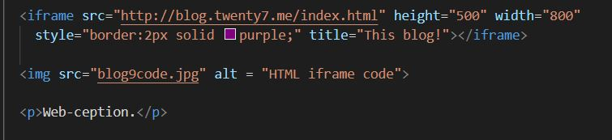

Blog Entry #9
11/18/2021
Inline Frames
In another post I talked about embedding YouTube videos, but you can do a lot more than that. Inline frames, or iframes, are a way to embed a webpage inside a webpage.
Web-ception.
It's as easy as specifying a URL. Though you'll notice I added some tags. You can adjust the window size with height and width. I also added a border to help make it more distinct.
Here are some more practical applications:
Directions you can share with users:
And of course, video:
Another common use of iframes is in advertising. Sometimes rather than an image or video ad, an iframe will be used instead. If I had anything to advertise I'd try an example.